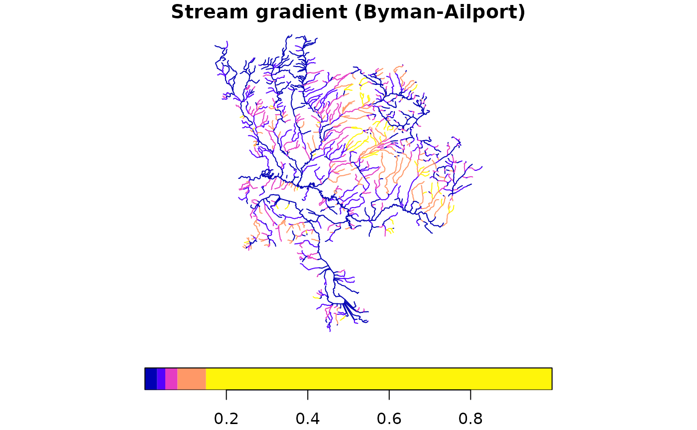

Copy rows from a read-only source table into a writable working schema
table via CREATE TABLE AS SELECT. The working copy can then be modified
by frs_break_apply(), frs_classify(), and frs_aggregate().
Arguments
- conn
A DBI::DBIConnection object (from
frs_db_conn()).- from
Character. Schema-qualified source table (e.g.
"bcfishpass.streams_co_vw").- to
Character. Schema-qualified destination table (e.g.
"working.streams_co").- cols
Character vector of column names to select, or
NULLfor all columns (SELECT *).- aoi
AOI specification passed to
.frs_resolve_aoi(). One of:NULL— no spatial filter (copy all rows)Character vector — watershed group code(s)
sf/sfcpolygon — spatial intersectionNamed list — table+id lookup or blk+measure delineation
- where
Character or
NULL. SQL predicate to filter rows. When bothaoiandwhereare provided they are ANDed together. Example:"watershed_group_code = 'BULK'"for a fast column filter on tables that carry a watershed group code column.- overwrite
Logical. If
TRUE, drop the destination table before creating. IfFALSE(default), error when the table already exists.
See also
Other habitat:
frs_aggregate(),
frs_break(),
frs_break_apply(),
frs_break_find(),
frs_break_validate(),
frs_categorize(),
frs_classify(),
frs_col_generate(),
frs_col_join(),
frs_feature_find(),
frs_feature_index(),
frs_habitat(),
frs_habitat_access(),
frs_habitat_classify(),
frs_habitat_partition(),
frs_habitat_species(),
frs_network_segment()
Examples
# --- What frs_extract produces (bundled data) ---
# frs_extract copies source table rows into a writable working table.
# Here we show what the extracted data looks like using cached data
# from the Byman-Ailport subbasin (Upper Bulkley River).
d <- readRDS(system.file("extdata", "byman_ailport.rds", package = "fresh"))
streams <- d$streams
# Streams have the columns you'd select: gradient, measures, geometry
names(streams)
#> [1] "linear_feature_id" "blue_line_key"
#> [3] "waterbody_key" "edge_type"
#> [5] "gnis_name" "stream_order"
#> [7] "stream_magnitude" "gradient"
#> [9] "downstream_route_measure" "upstream_route_measure"
#> [11] "length_metre" "watershed_group_code"
#> [13] "wscode_ltree" "localcode_ltree"
#> [15] "channel_width" "channel_width_source"
#> [17] "geom"
nrow(streams) # 2167 segments in this subbasin
#> [1] 2167
# Plot streams colored by gradient — this is what you'd extract
# to a working table before breaking/classifying
plot(streams["gradient"], main = "Stream gradient (Byman-Ailport)",
breaks = c(0, 0.03, 0.05, 0.08, 0.15, 1), key.pos = 1)

if (FALSE) { # \dontrun{
# --- Live DB: extract the same Byman-Ailport area ---
conn <- frs_db_conn()
aoi <- d$aoi # sf polygon from bundled data
conn |> frs_extract(
from = "bcfishpass.streams_vw",
to = "working.demo_streams",
cols = c("segmented_stream_id", "linear_feature_id", "blue_line_key",
"gradient", "channel_width", "downstream_route_measure",
"upstream_route_measure", "geom"),
aoi = aoi,
overwrite = TRUE
)
# Read back and plot — should match the bundled data above
result <- frs_db_query(conn,
"SELECT gradient, geom FROM working.demo_streams")
plot(result["gradient"], main = paste(nrow(result), "segments extracted"))
# Clean up
DBI::dbExecute(conn, "DROP TABLE IF EXISTS working.demo_streams")
DBI::dbDisconnect(conn)
} # }